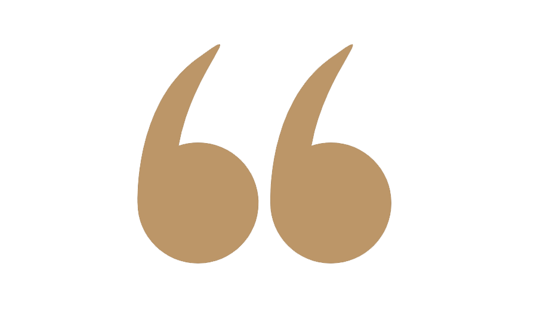
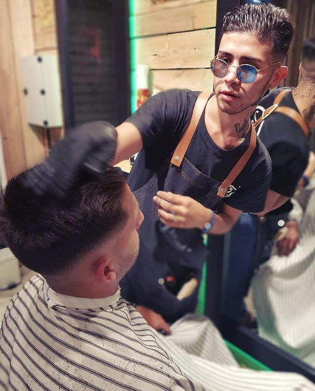

Disfruto creando utilidades para personas y empresas. Soy estudiante de Análisis de Sistemas y en el futuro ansío convertirme en un desarrollador full-stack
Más sobre mí
Proyecto encargado por una peluquería con ambición de crecer y tener presencia en la web. El proyecto está terminado y aprobado pero falta coordinar para la entrega final. (click para ir)

Proyecto hecho como práctica de maquetación.

Plantilla de muestra creada para su venta a empresas inmobiliarias.

Práctica de maquetación
Proyecto encargado por una peluquería con ambición de crecer y tener presencia en la web. El proyecto está terminado y aprobado pero falta coordinar para la entrega final.
Proyecto hecho como práctica de maquetación.
Plantilla de muestra creada para su venta a empresas inmobiliarias.
Práctica de maquetación
Me llamo Matías Orcajo, tengo 22 años y estudio Análisis de Sistemas.
Cuento con experiencia laboral en otros rubros pero en el desarrollo sólo cuento con trabajos hechos de manera freelance, habiéndome buscado yo mismo los clientes. Ahora estoy dando el paso para ingresar al mundo laboral como jr dev, y quiero aportar a su empresa los atributos que identifican mi persona: responsabilidad, capacidad, esfuerzo, proactividad, dedicación y muchas ganas de trabajar y aprender
Arq. Natalia Donadei
(jefa)Matias es muy responsable y profesional en todas sus tareas, tanto individuales como en equipo. Es una buena persona cumplidora, inteligente y comprometida al 100% siempre predispuesto a mejorar la dinámica laboral. Todas las tareas las toma con total compromiso, siempre intentando mejorar y ser más ameno el trabajo, fue un placer compartir el espacio laboral con una persona con su calidad humana.
Ezequiel
(cliente)Siempre fue muy atento con mis necesidades y requerimientos, incluso se acercó a mi local y tomó las fotos con su cámara. Es muy responsable, cumplió con todo lo que acordamos, se lo estoy recomendando a cada conocido que quiere tener su emprendimiento en la web.